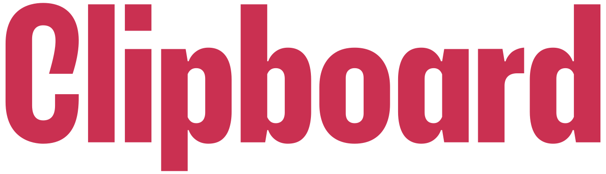
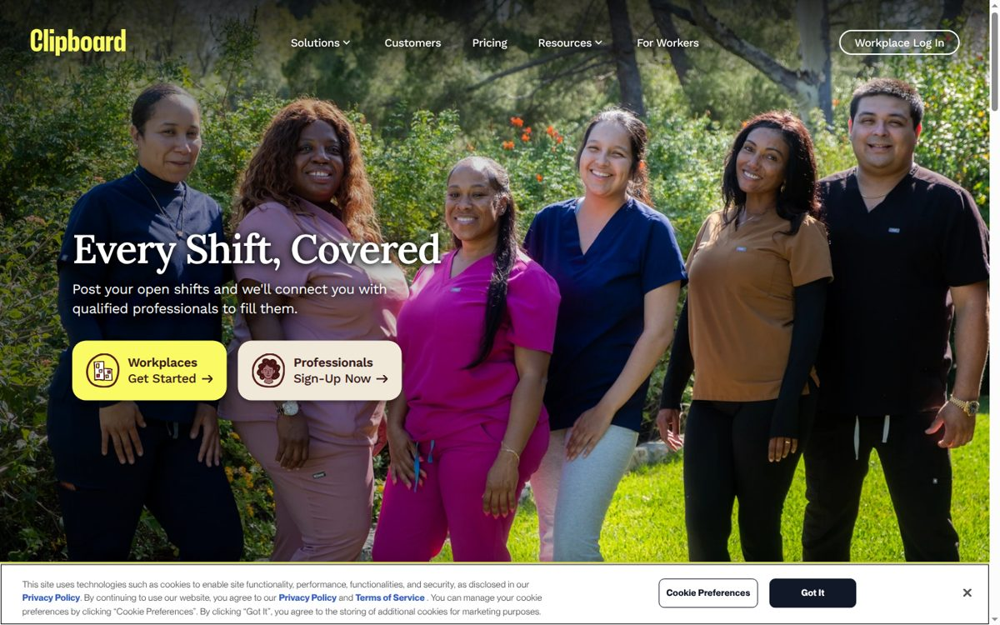
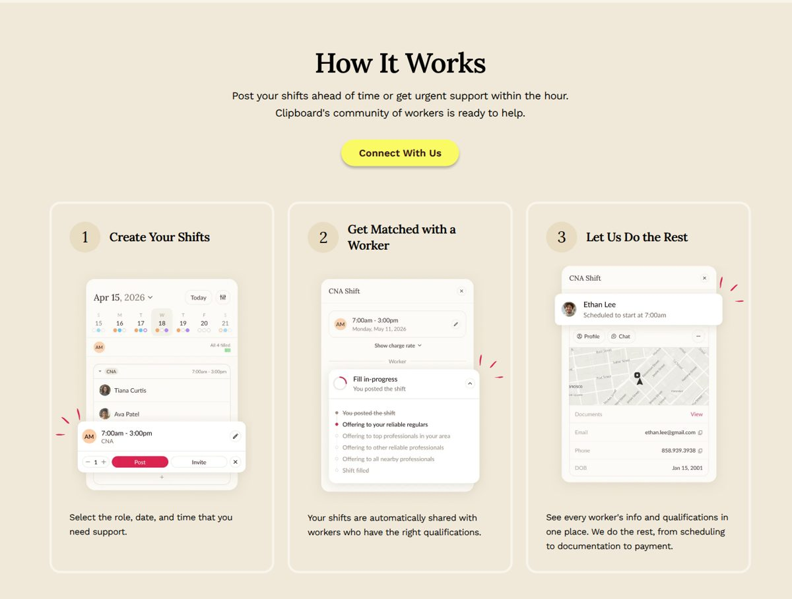
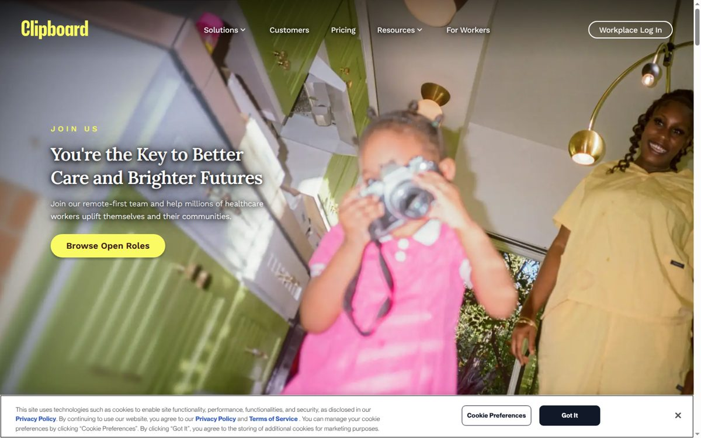
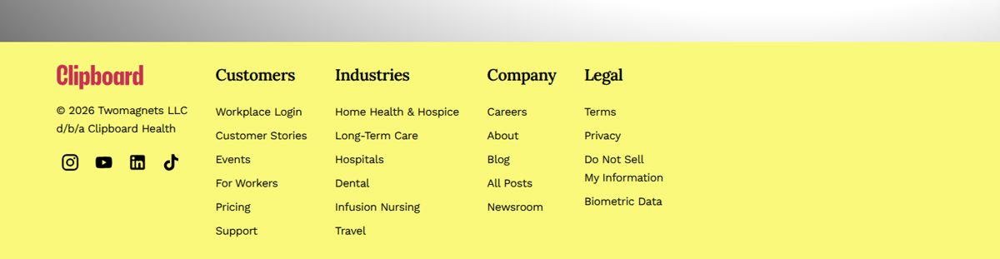

Independent concept · not affiliated with ClipboardOps Reliability DeskThe colours, fonts and component shapes below were read from the public clipboard.com pages (see docs/brand-design.md). The logo is the unmodified public SVG and always carries the independent-concept label.
Burgundy on light/cream surfaces
Yellow on dark/maroon surfaces
Yellow #FAFA64
Primary CTA
Burgundy #CA3051
Accent, approve
Maroon #37171A
Text on yellow
Ink #1F2937
Body text
Cream #F0E9D9
Panels
Cream light #F8F4EA
Page
Pink #EBA8B6
Human handoff
Blue #3860BE
Links, simulated
Navy #27455C
Timeline
Green #468254
Verified
Grey #696969
Muted ≥14px
Line #E1DED4
Card borders
Work Sans 400 18px lead: 12 support cases share one upstream cause.
Work Sans 400 16px body: deterministic rules group cases by symptom, dependency and time window.
Work Sans 500 14px UI label (stands in for proprietary ppNeueMontreal)
9 cases · 6 workplace · 3 worker · dependency shift-status webhook (simulated)
Deterministic ruleSimulated connectorThe desk does not decide billing, credential or trust outcomes and never moves money. Context packet attached.
Human handoffAutomated repair refused


